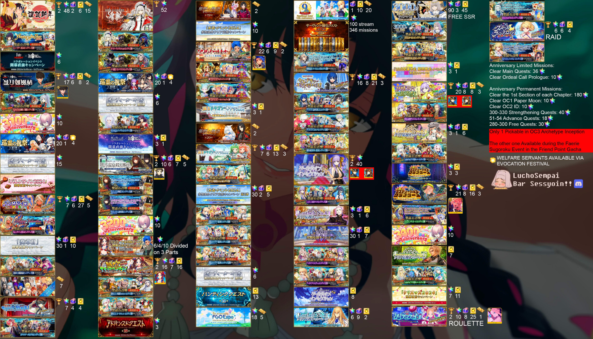

Suivi des Bond Levels
Sélectionne tes Servants, gère leurs priorités et coche leur Bond Max.
0
Bond Max
➕ Ajouter un nouveau Servant
Catalogue de Farm
Optimise tes routes de matériaux.
Training Ground & Gemmes
Planning des classes et coûts en gemmes pour tes compétences.
Events & Bannières 2026


Sélection Grand Graph